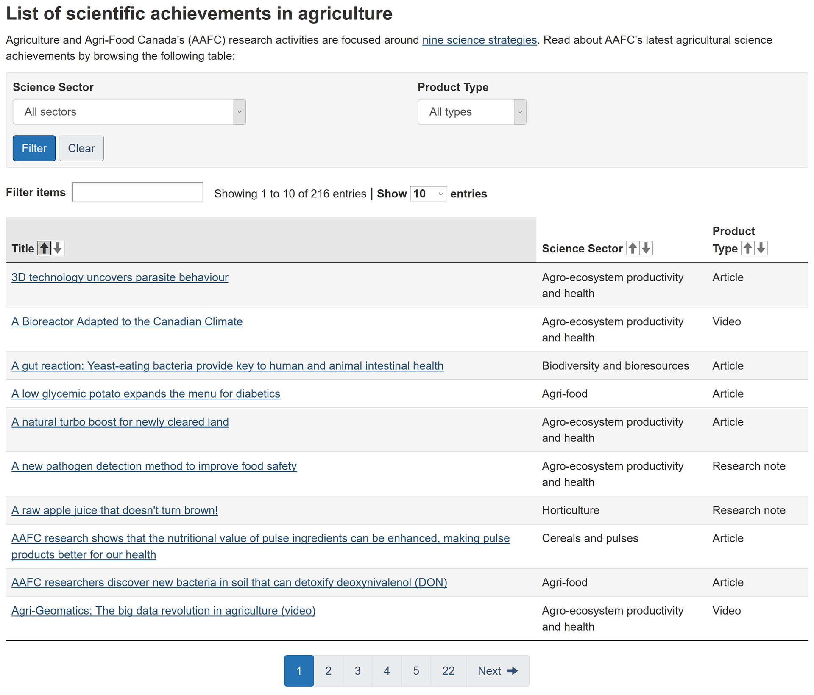
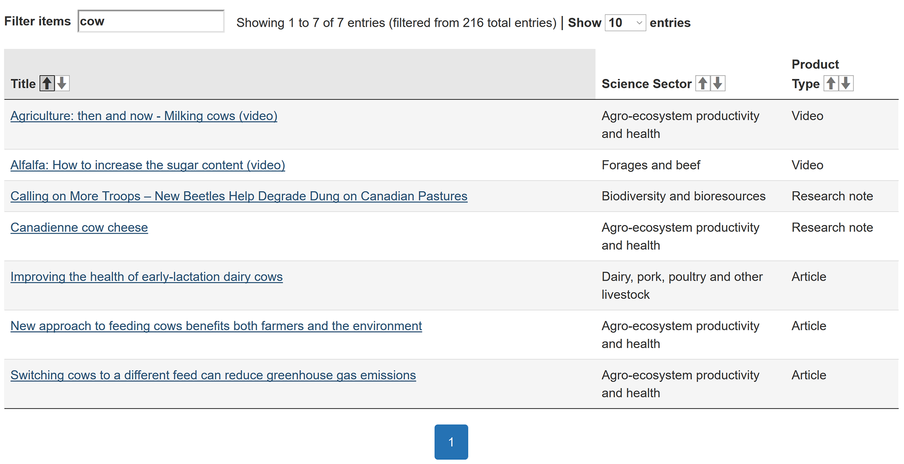
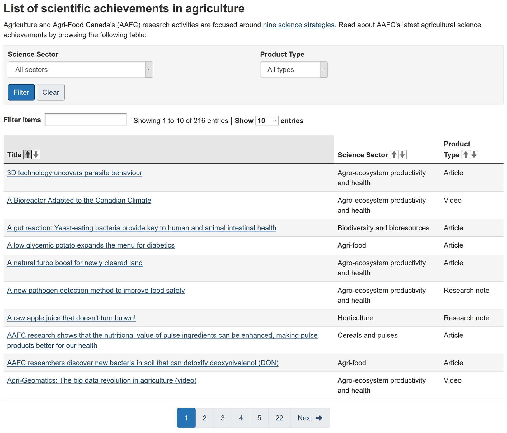
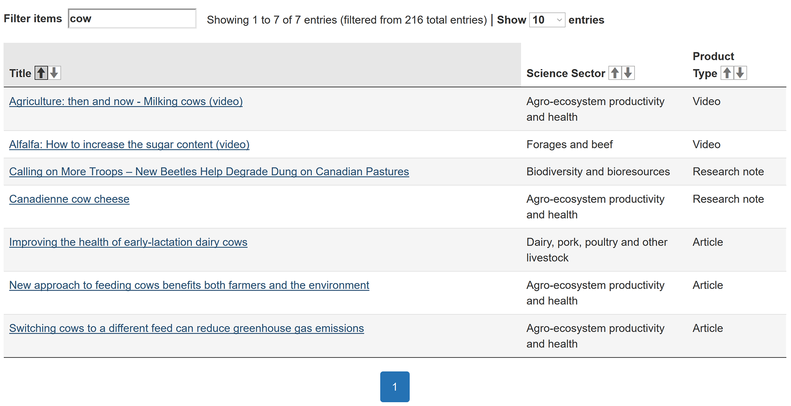

AAFC — Scientific Achievements
Transitioned a set of pages with repetitive links and poor searchability into a single page with improved searchability via filter. Articles are now organized with key words, including semantic keywords related to the articles but not featured in the article title. Completed during a summer co-operative education work term (2018).
Gallery
 


